Take Home Exercise 1
Task
In this Take Home Exercise, age-sex pyramids across nine selected planning areas in trellis display are created using Tableau Desktop.
Data Source
The data “Singapore Residents by Planning Area / Subzone, Age Group, Sex and Type of Dwelling, June 2022” used for this Take Home Exercise is obtained from the Department of Statistics, Singapore in csv format.
Preparation of Analytical Visualisation on Tableau
Load the csv file into Tableau as follows: Connect To a File > Text file.
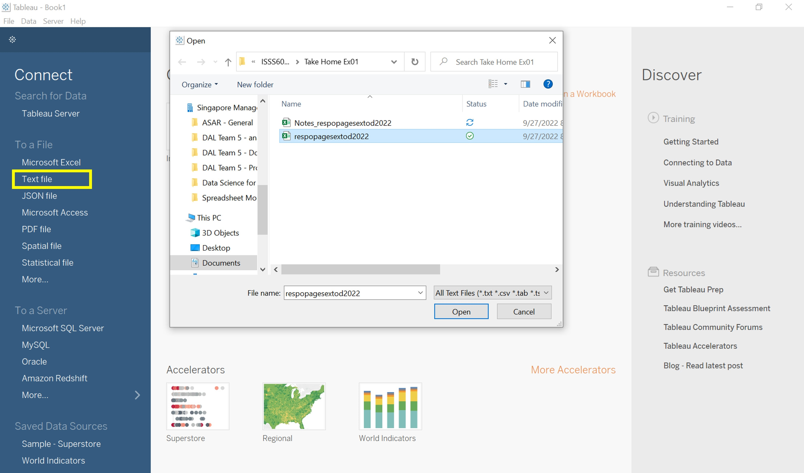
Fig 1 In a new Worksheet, Age (field: “AG”) is plotted against Population (field: “Pop”) by Gender (field: “Sex”).
Since Age is already grouped into bins, this field can be used as-is in the Row shelf. The age groups are sorted in descending order as follows: right-click on AG > Sort > Sort by Data Source Order - Descending.
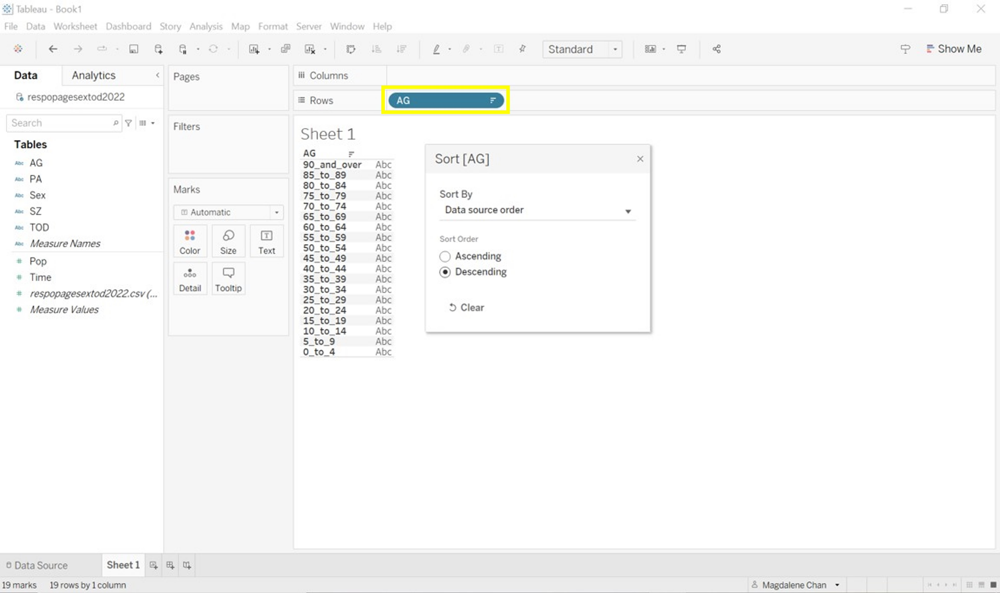
Fig 2 For a neater look of the final chart, the age group labels are amended to remove the underscores (_) as follows: Data pane > right-click on AG > Aliases > Amend labels accordingly.
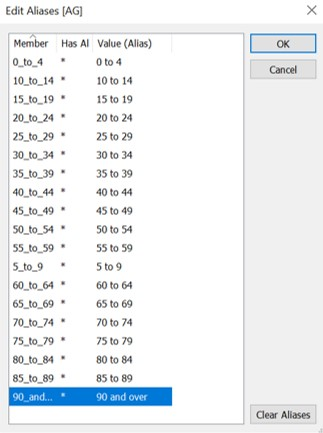
Fig 3 Prior to creating the age-sex pyramid chart, the Population field will need to be split out - one field for each Gender as follows: Analysis > Create Calculated Field.
The first calculated field MalePop is created using the following formula:
IF [Sex]='Males' THEN [Pop] END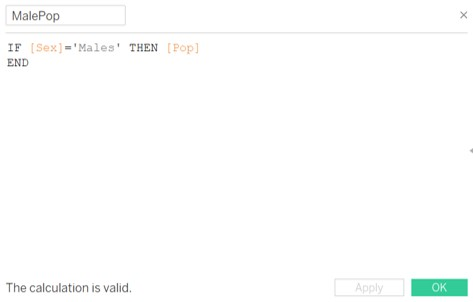
Fig 4a A second calculated field FemalePop is created with the following formula:
IF [Sex]='Females' THEN [Pop] END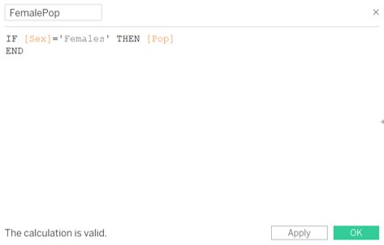
Fig 4b The two new fields MalePop and FemalePop are dragged to the Column shelf.
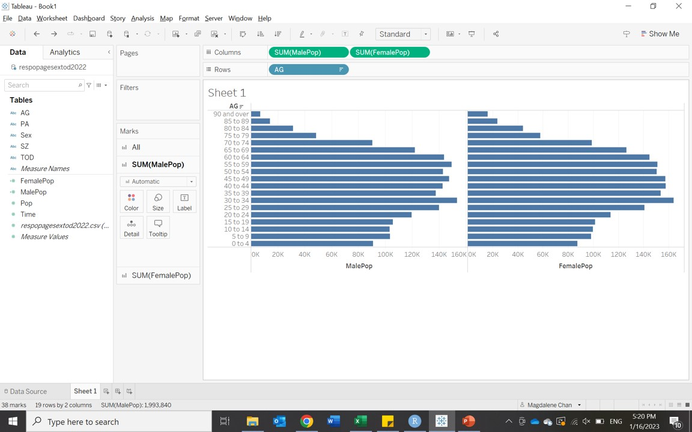
Fig 5 To create the age-sex pyramid, right-click on the axis for MalePop to reverse the axis and rename the axis title as “Male”.
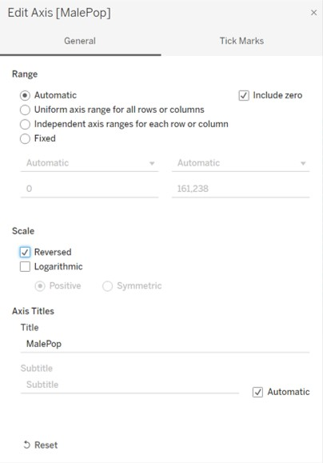
Fig 6 Similarly, the axis title for FemalePop is renamed as “Female”. In the Marks card for SUM(FemalePop), the colour is adjusted to pink to show a contrast against MalePop.
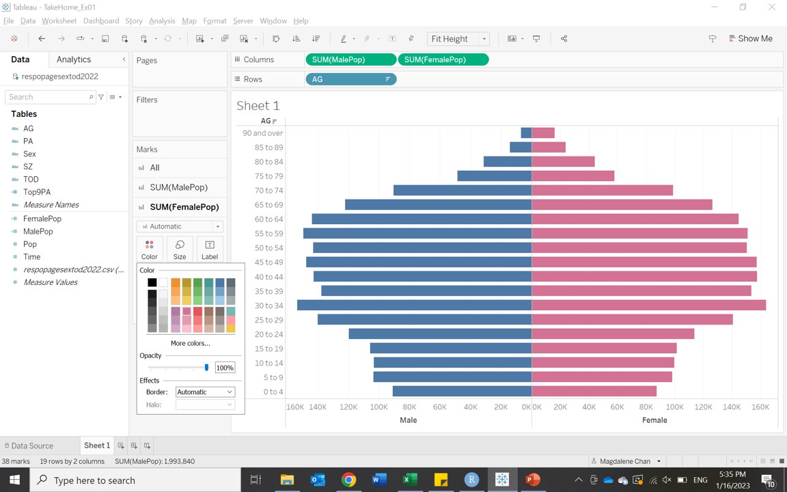
Fig 7 For the trellis display, age-sex pyramids will be shown for the Top 9 Planning Areas by Population Size.
A calculated field Top9PA (measure) is created using the following formula to identify the population size by planning area.
{FIXED [PA]: SUM([Pop])}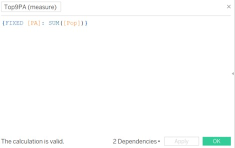
Fig 8a This calculated field is then duplicated as a dimension field (Top9PA (dimension)) in order to be used as a filter. This filter is dragged to the Filters shelf > Top > By field: Top 9 by Top9PA (dimension) - Sum.
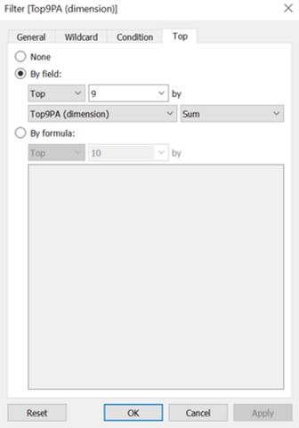
Fig 8b Top9PA (dimension) is dragged to Column shelf and sorted in descending order: right-click on Top9PA (dimension) > Sort > Sort by Data Source Order - Descending.
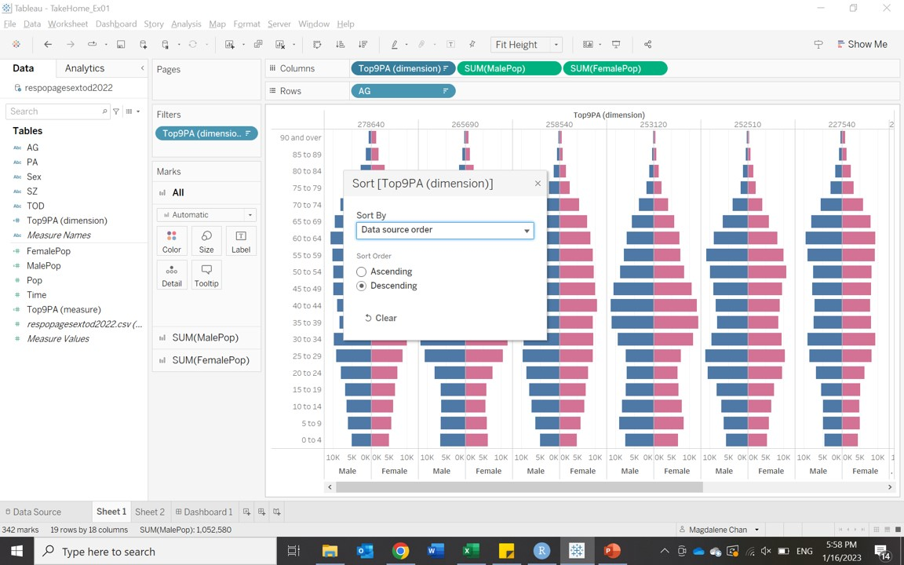
Fig 9 A second worksheet is created as “header labels”: PA is dragged to the Columns shelf and sorted in descending order, and Top9PA (measure) is dragged to the Marks card > Text to create a table. Similar to Sheet 1, Top9PA (dimension) is used to filter this worksheet.
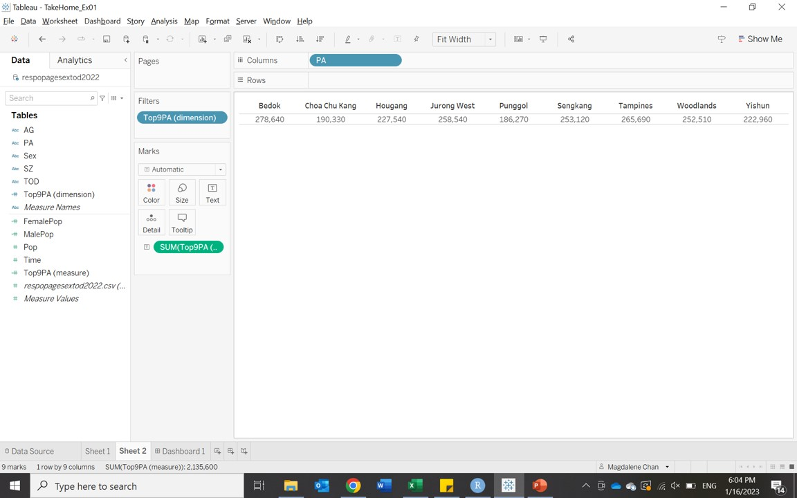
Fig 10 Both worksheets can now be put together in a new Dashboard to create a trellis display.
In the Dashboard pane, the Size is adjusted to “Automatic” (Fig 11a). Next, Sheet 2 is stacked above Sheet 1 within the dashboard. The Sheet Title in both sheets will be hidden. The header of Sheet 1 will also be hidden (Fig 11b) since Sheet 2 will be used as the header for thecharts.
Text and Blank objects (Fig 11b) are also inserted as a column header for our table and to align it against the age-sex pyramid charts accordingly. Lastly, a Text object is also inserted for the Dashboard title (Age-Sex Pyramid (for Top 9 Planning Areas by Population Size)).
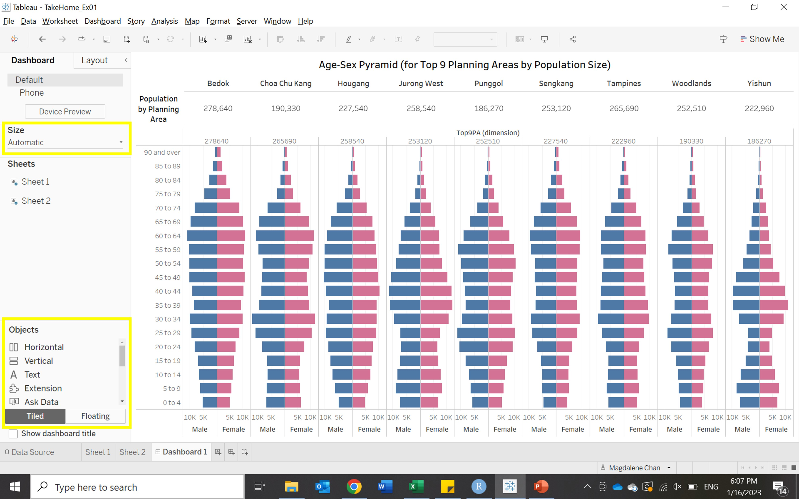
Fig 11a 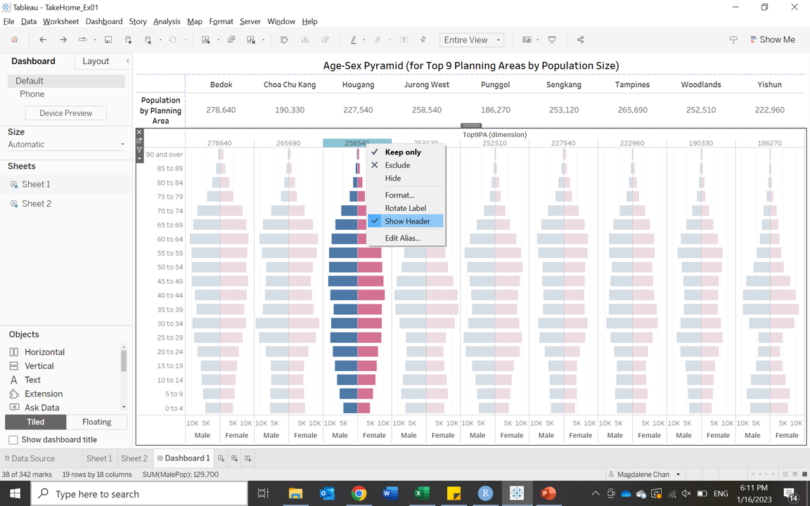
Fig 11b
Patterns observed in Analytical Visualisation
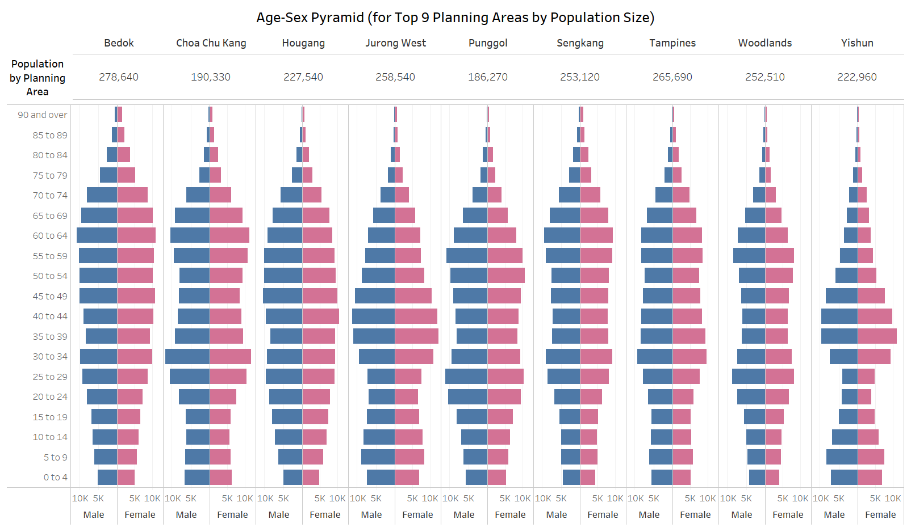